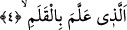

kişi varsa onlar bu cömertliklerini Allah’tan almışlardır. O halde nasıl olur da bunlar
asıl kaynak olan Allah’a denk olabilirler?
4. Kalemle (yazmayı) öğreten
Yani öğrettiğini başka bir şeyle değil, yalnız kalem vâsıtasıyla öğreten Rabbin en
büyük kerem sâhibidir. Nasıl ki okuyup yazmayı bilen bir kişi kalem vâsıtasıyla okuyup
yazıyorsa Allah da bunlar olmaksızın sana öğretmiştir.
Bazı âlimler şöyle derler; Yazı işi kalemle olur. Kalem -kelime olarak- kendisiyle
yazı yazılan şey demektir. Çünkü kalem kelimesinin kökü kesmek, yontmak anlamına
gelir. Okuduğumuz âyette Allah’ın insana kalemle yazı yazmayı öğretme nimetinin
hatırlatılması vardır. Bundan dolayı derler ki: İlim bir avdır, yazı yazmak ise o avın
yakalanması anlamına gelir. Nitekim şairin biri bir beytinde bu gerçeği şöyle dile
getirir:
Gün gelir yazan el çürür kara toprakta,
Zaman akar, onun yazdığı kalır kağıtta.
Dikkat et yazdığına, seni utandırmasın,
Sevindirsin kıyamet günü, mahçup etmesin huzurda!
Kalem olmasaydı din ve dünya işleri doğru-dürüst gitmezdi. Bu âyet-i kerimede ilk
yaratılanın kalem-i a’lâ en yüce kalem olduğuna işâret vardır ve bu da Peygamber
Efendimiz’in (s.a.) ruhudur. Çünkü Allah Teâlâ Peygamber Efendimiz vâsıtasıyla kalbe,
onun bilmediği tafsili ilimleri bahşetmiştir, öğretmiştir.
Ka’bu’l-Ahbâr der ki: Arapça, Süryânice ve diğer bütün kitapları ilk yazan
ölümünden üçyüz sene önce Hz. Adem olmuştur. O bu kitapları çamur üzerine yazmış
ve sonra çamuru pişirmiştir. Daha sonraları İdris (a.s.) Hz. Adem’in yazdıklarını
çıkarmıştır. Bu, rivâyetlerin içinde en doğrusudur. Remel hattını ilk kez yazan kimse ise
Hz. İdris (a.s.) olmuştur. Farsça yazıyı ilk yazan fars krallarının üçüncüsü olan
Tahmures’tir. Kağıdı ilk kez kullanan kişi ise Hz. Yusuf (a.s.) olmuştur.
İmam Süyûtî (rh.) der ki: Allah Teâlâ’nın yarattığı ilk nesne kalem olmuştur. Allah
kaleme; “Kıyamet gününe kadar olacak olan herşeyi yaz” emrini vermiştir. Kalemin
yazdığı ilk ifâde şudur: “Ben tevbeleri çok kabul edenim. Tevbe edenin tevbesini kabul
ederim.”
Bazıları şöyle derler: “Kan pıhtısından yaratmak”la “kalemle öğretmek” arasındaki
ilişki şudur: İnsanoğlunun insan hâline gelinceye kadar geçirmiş olduğu aşamaların
içinde en aşağısı; kan pıhtısı halidir. En yüce olduğu mertebe ise alim bulunduğu halidir.